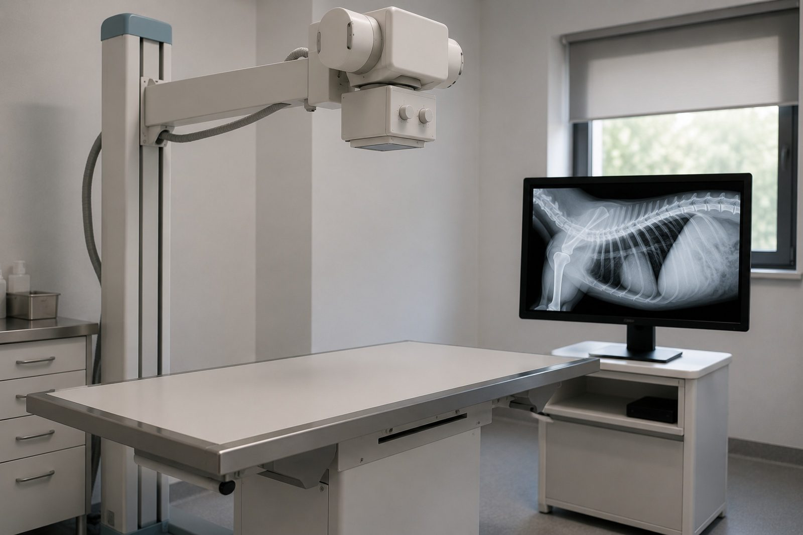
RTG cyfrowy
Zdjęcie klatki piersiowej, jamy brzusznej albo kości jest gotowe w kilka minut, a opis słyszysz od razu, przy nas.
160 złdwie projekcje
Pon.–pt. 8:00–20:00 · sob. 8:00–14:00
Poza godzinami dyżur telefoniczny: 601 220 118
Przychodnia weterynaryjna w Pabianicach
Zwierzę w ciężkim stanie trafia na stół w kilka minut od wejścia, bez rejestracji i bez kolejki. Kiedy stan zwierzęcia jest stabilny, mówimy, co podejrzewamy, jakie badanie to potwierdzi i ile będzie kosztowało — zanim je zrobimy.
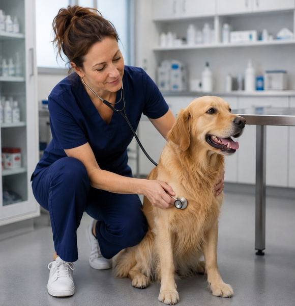
Bez kolejki
W takiej sytuacji inni pacjenci muszą poczekać. Tu liczą się minuty.
Jeśli nie masz pewności, zadzwoń. Przy nagłych objawach nie czekaj na wolny termin.
Jak wygląda wizyta
Wizyta zaczyna się od pełnego badania: osłuchania, badania jamy brzusznej, pomiaru temperatury, oceny błon śluzowych i węzłów chłonnych. Trwa to kilkanaście minut i nie da się tego skrócić.
Po badaniu słyszysz, co lekarz podejrzewa i czego jeszcze nie da się stwierdzić bez badań dodatkowych. Przy każdym proponowanym badaniu pada cena i to, co konkretnie ono rozstrzygnie.
Jeśli nie zgadzasz się na któreś z nich, mówimy, co to oznacza dla rozpoznania. Decyzja należy do Ciebie i nie wracamy do niej z pretensją.
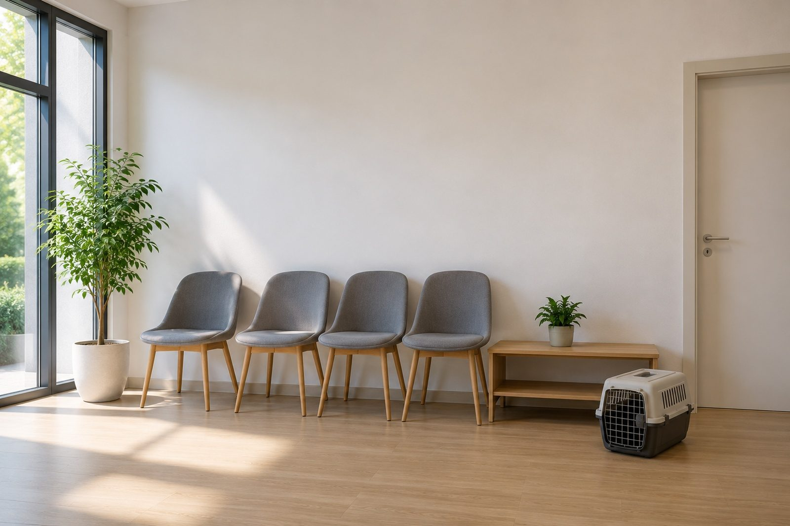
Poczekalnia ma cztery miejsca. Więcej nie jest potrzebne, bo umawiamy co pół godziny.
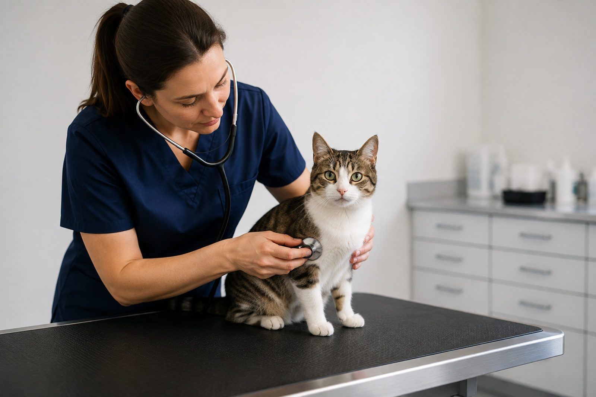
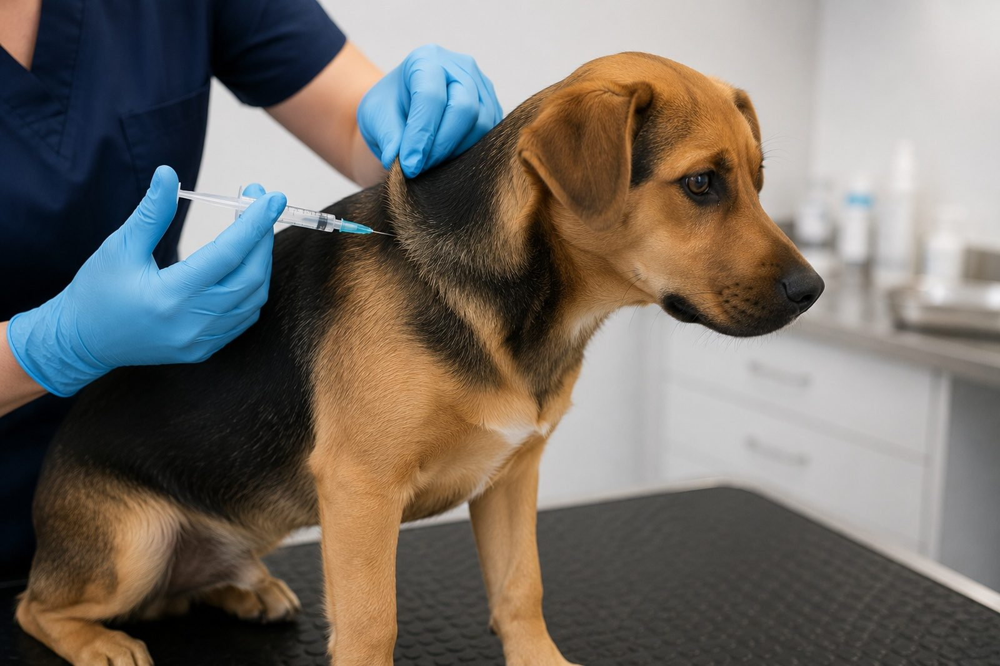
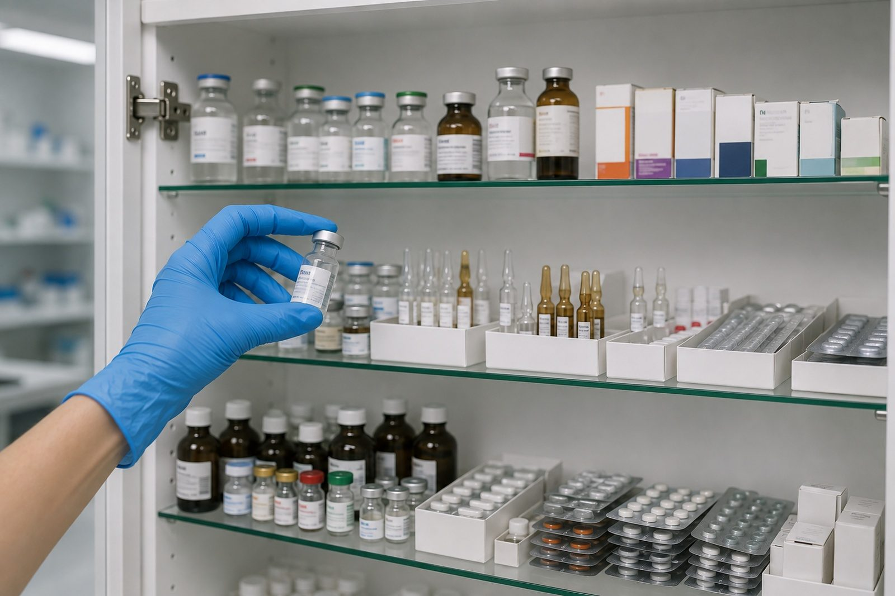
Co mamy na miejscu
Przy ostrym brzuchu albo dusznościach czas między badaniem a decyzją liczy się w minutach. Dlatego to, co rozstrzyga najczęściej, robimy u siebie.

Zdjęcie klatki piersiowej, jamy brzusznej albo kości jest gotowe w kilka minut, a opis słyszysz od razu, przy nas.
160 złdwie projekcje
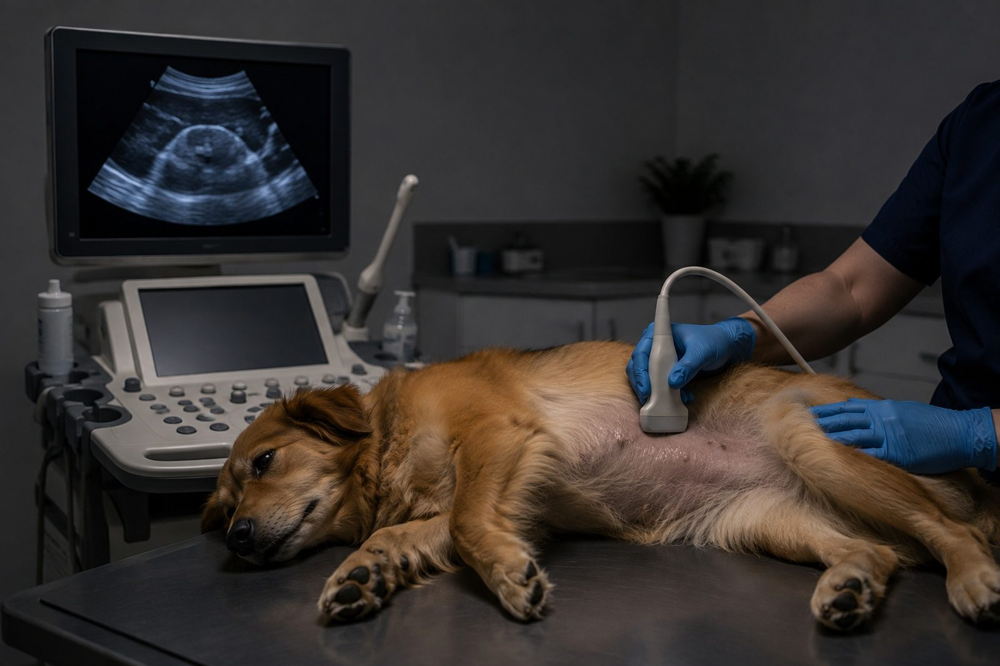
Badamy jamę brzuszną i serce. Bez znieczulenia, zwykle przy zwierzęciu leżącym na boku. Trwa to około 20 minut.
180 złjama brzuszna
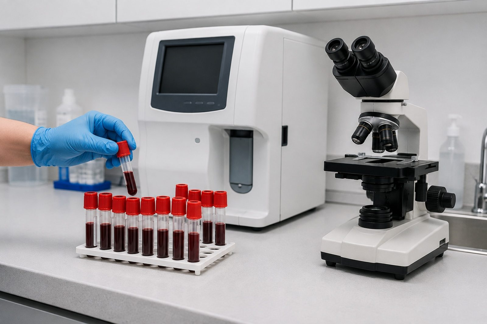
Wyniki morfologii i biochemii są gotowe w dwadzieścia minut, więc nie musisz przyjeżdżać po nie następnego dnia.
140 złpakiet podstawowy
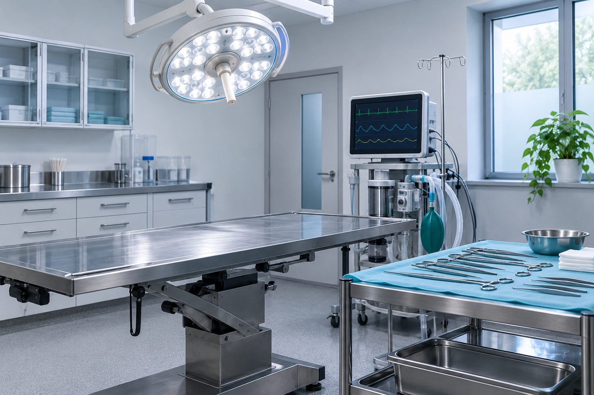
Zabiegi w obrębie tkanek miękkich i stomatologia. Znieczulenie wziewne z monitorowaniem pracy serca przez cały czas.
wycenapo badaniu kwalifikującym
Czego nie mamy
Mówimy o tym od razu, żeby nikt nie tracił czasu na dojazd do nas, jeśli i tak trzeba będzie jechać dalej.
Z czego składa się rachunek
To przykład typowego rachunku za nagłą wizytę, nie wycena konkretnego przypadku. Przed każdym kolejnym badaniem lub zabiegiem poznasz jego cenę.
Płatność kartą i gotówką. Rachunek rozbity na pozycje, nie jedną kwotą — po to, żeby dało się go sprawdzić.
Kto tu pracuje
Hanna Sikora — lekarz weterynarii, dziewiętnaście lat praktyki. Interna i diagnostyka obrazowa; USG wykonuje sama, nie odsyła do zewnętrznego specjalisty.
Marcin Zdunek — technik weterynarii, osiem lat. Pobrania, kroplówki, przygotowanie do znieczulenia, nadzór nad wybudzaniem.
Przy zabiegu pod znieczuleniem w sali są dwie osoby: jedna wykonuje zabieg, druga zajmuje się wyłącznie monitorowaniem parametrów. Nie łączymy tych ról, choć wolno.
Raz w roku oboje jadą na szkolenie; w tym roku było o znieczuleniu pacjentów geriatrycznych.
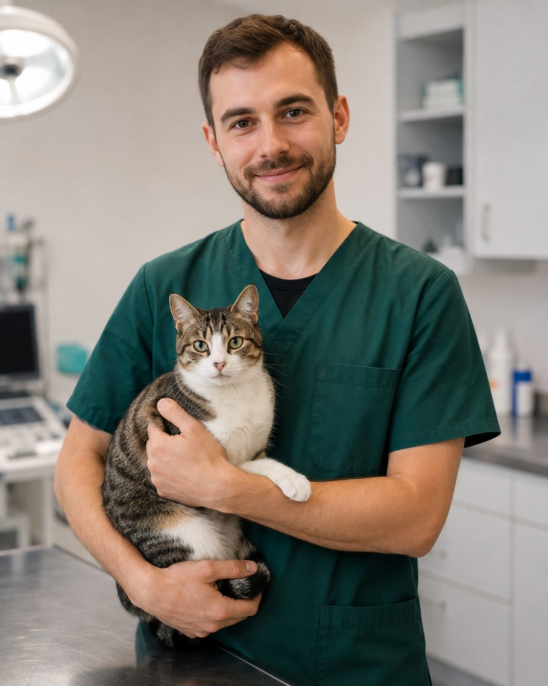
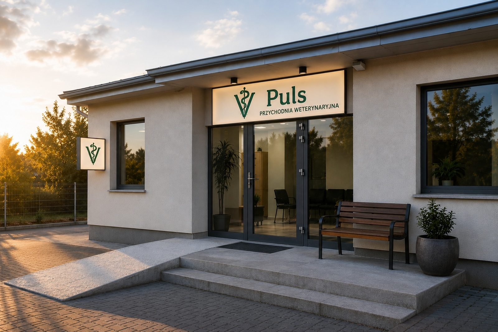
Wejście bez progu, z podjazdem. Transporter i wózek wjeżdżają bez podnoszenia.
Nocą i w niedzielę
Jesteśmy przychodnią, nie lecznicą całodobową, i nie udajemy, że jest inaczej. Po godzinach w budynku nikogo nie ma — przyjazd pod zamknięte drzwi kosztowałby Cię czas, którego zwierzę może nie mieć.
Dyżur telefoniczny działa do dwudziestej trzeciej i odbiera go lekarz, nie rejestracja. Powie, czy to może poczekać do rana, czy trzeba jechać teraz i do której lecznicy.
W poniedziałek rano oddzwaniamy do każdego, kto dzwonił w nocy — żeby wiedzieć, jak się skończyło.
Kontakt
Umawiamy co pół godziny, więc terminy zwykle są na ten sam albo następny dzień. Nagłe przypadki wchodzą poza kolejnością i nie wymagają telefonu.
Parking przed budynkiem, sześć miejsc. Wejście od podwórza, bez progu. Gabinet dla kotów jest pierwszy z lewej, żeby nie przechodzić przez całą poczekalnię.